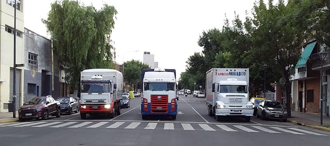

QUIENES SOMOS
Expreso Morabito es una empresa con una trayectoria de más de 50 años. Con sus origines en la Ciudad de La Plata, poco a poco se fue expandiendo hasta llegar a gran parte de la Provincia de Buenos Aires. Contamos con una extensa flota de camiones que le permiten a usted, trasladar lo que usted necesite sin importar el tamaño del producto.

Algunos de nuestros camiones